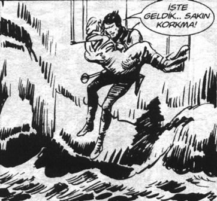

Şino’yla garaja girdiler. Şino, Hıdır’ın bekârlıktaki ev arkadaşıydı. Dünya karakterlisi bir çocuktu. Çok güzel günleri geçmişti. Şinasi Havuz.
İkisinde de araba merakı vardı. Şinasi Showpa’dan taksitle beyaz bir Lada Samara almıştı. Şu lastiğini değiştirmezsen devamlı balans ayarı gerektiren Ladalardan.
Arabanın kapısını özenle açtı Hıdır.
Şinasi girmeden içeriyi şöyle bir kokladı.
– Abi yeni araba kokusu; inanılır gibi değil. Abi nasıl korudun 15 yıllık arabayı böyle.
– Bakıyoruz be Şino. Başka zevkimiz yok.
– Abi bunu Tofaş’a götür acayip paraya alırlar.
– Hatırlar mısın, 90’ların başında parayı ödeyip ismini yazdırıyordun; sonra iki yıl kuyruk bekliyordun.
– Doğru abi, ikinci elleri daha pahalıydı. Tabii başka araba da yok.
– Ya Reno alacan, ya Tofaş.
– Yalnız abi asıl Doğan SLX tabii. Onlar biliyorsun Türkiye’nin Mercedes’i. Yerden yüksek, parça ucuz.
– Hatırlar mısın, sağ dikiz aynası opsiyoneldi bunlarda. Ekstra para ödeyip sağ dikiz aynası almıştık. Bir de altında koruyucu karter yoktu; broşürde şöyle yazıyordu: “Karter muhafazası taktırılması önemle önerilir.”
– Tak o zaman değil mi, niye yalvarıyon?
Kıkırdadılar. Şinasi torpidoyu açtı, torpidodan bir çift külotlu çorap düştü.
– Vay baba, araçta kadın çorabı taşıyoruz ha! Çapkın seni!
– Değil oğlum. Bir taksiciden duymuştum. Motor kayışı koptu mu, bunu bağlıyorsun motora, seni gideceğin yere yavaş yavaş götürüyor.
– Vay be abi! Arabaya bak. Hani bir ara Citroen efsanesi vardı. Araç çölde kalıyor, II. Dünya Savaşı. Adamda sadece muz var. Depoya sekiz-on tane muz soyup atıyor adam, araç gidiyor çölde.
– Maymun mu oğlum bu? Kıkırdadılar.
– Abi sen bunu bir modifiye ettirip Doğan görünümü versen, tadından yenmez be!
– Yapalım mı Şino?
– Abi sana kalmış. Aslında bir de çip taktırsan çekişi çok artar.
– Bilmem ki orijinalliğini bozmayalım.
– Doğru abi.
– Orijinal olmayan bir tek senin hediyen var arabada.
İkisi de gayri ihtiyari dikiz aynasından arka camdaki yazıya baktılar. Arabadaki orijinal olmayan tek şeye:
“Nazar etme ne olur, çalış senin de olur.”
Ruhunun derinliklerinde, bunun, sonraki yaşamının başlangıç noktası olduğunu hissetmişti, öncekinden çok daha fazla şey ifade eden bir yaşamın.[5]
